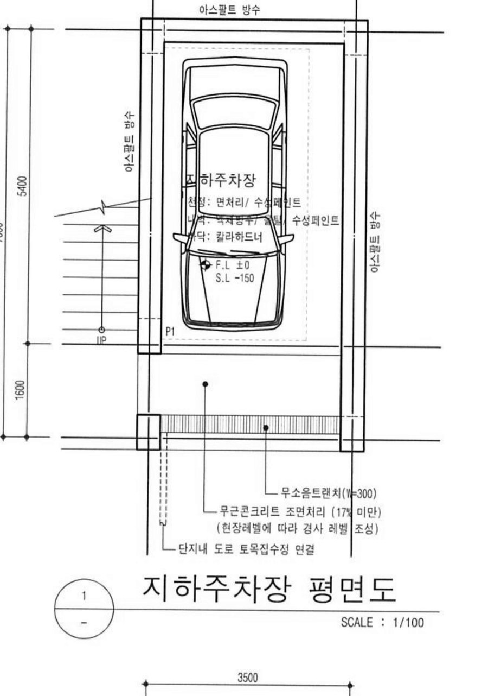

양평 강상면 송학리
남한강 건너 산 아래, 24세대가 앉는 땅과 그 위의 건축을 정리했습니다.
남한강 상류, 강 건너의 마을
강상면은 경기도 양평군에서 남한강 상류에 위치한 면입니다. 면적은 약 37.9㎢로, 동북으로는 양평읍, 서쪽으로는 강하면, 남쪽으로는 금사면·산북면과 접해 있습니다.
면소재지는 송학리이며, 강상면사무소와 강상119안전센터가 함께 있습니다. 송학리는 남한강을 사이에 두고 양평읍과 마주 보고 있고, 양근대교와 양평대교를 통해 양평읍 시가지와 연결됩니다.
단지는 이 송학리의 산자락, 산 96-11번지 일대에 들어섭니다. 보전관리지역 안의 땅으로, 뒤로는 산이 두르고 있습니다.
행정 정보
- 경기도 양평군 강상면 송학리 산 96-11번지 일대
- 강상면: 남한강 상류, 면적 약 37.9㎢, 7개 법정리
- 면소재지: 송학리 (강상면사무소 · 강상119안전센터)
- 양평읍과는 양근대교 · 양평대교로 연결
- 단지 용도지역: 보전관리지역
건축 개요
설계개요와 총별개요를 기준으로 정리한 수치입니다. 대지면적에는 단지 안 도로 1,385㎡가 포함되어 있습니다.
- 대지위치
- 경기도 양평군 강상면 송학리 산 96-11번지 일대
- 대지면적
- 8,885.00㎡ (2,687.7평)필지 7,500㎡ + 단지 도로 1,385㎡
- 지역·지구
- 보전관리지역
- 건축규모
- 지하 1층 / 지상 2층
- 주용도
- 단독주택(전원주택) 24세대
- 구조
- 철근콘크리트 구조
- 건축면적
- 1,143.74㎡ (약 346평)
- 연면적
- 2,574.72㎡
- 용적률산정
연면적 - 2,063.72㎡
- 건폐율
- 12.87%
- 용적률
- 23.23%
- 주차대수
- 36대1대형 지하주차박스 2동 · 2대형 11동 포함
- 오수처리
- 세대별 오수처리시설 3㎥ · 24개소
- 도면 기준
- 2022년 4월 · 기본계획(안)
※ 위 수치는 2022년 4월 작성된 설계개요(최종) 및 총별개요를 기준으로 합니다. 기본계획(안)으로 추후 변경 및 각종 인허가 과정에서 변경될 수 있으며, 각 필지의 대지면적과 도로면적은 대지 확정측량·등록전환 후 달라질 수 있습니다.
땅의 87%는 집이 아닙니다
건폐율 12.87%, 용적률 23.23%. 이 두 숫자가 단지의 성격을 가장 잘 설명합니다.
건물이 앉는 면적
1,143.74㎡ · 약 346평
2,687.7평 가운데 12.87%만 건물이 차지합니다.
세대가 쓰는 바닥면적
2,063.72㎡ · 용적률 23.23%
24세대 모두 두 층을 넘지 않습니다.
필지 하나의 크기
평균 312.5㎡ · 약 94.5평
가장 작은 필지 230㎡, 가장 큰 필지 470㎡입니다.
집과 집 사이가 벌어져 있다는 것은 창을 마주 보지 않는다는 뜻이고, 마당이 그만큼 남는다는 뜻입니다. 남은 땅은 세대별 마당과 단지 안 도로, 그리고 원래의 산자락으로 남습니다. 단지 안 도로 1,385㎡를 대지면적에 포함해 계산한 값이므로, 실제 세대별 필지는 그보다 조금 작습니다.
필지와 배치
24개 필지가 계단식으로 낮게 앉아 있습니다. 4호 한 세대만 470㎡의 큰 필지에 43형으로 배치했고, 나머지는 230~440㎡ 필지에 24·27·32형이 들어갑니다. 호수와 타입, 필지별 대지면적을 함께 표기한 원도입니다.

※ 본 개요는 기본계획(안)으로 추후 변경 및 각종 인허가 과정에서 변경될 수 있습니다. 각 필지의 대지면적 및 도로면적은 추후 대지 확정측량 및 등록전환 후 변경됨을 알려드립니다. 필지별 수치는 세대 안내에 표로 정리했습니다. 배치도 원본 크기로 보기
구조와 마감
골조는 철근콘크리트입니다. 목조나 경량철골이 아니라, 두 층과 지하주차박스를 함께 지탱하는 콘크리트 구조로 설계했습니다. 지하주차장 바닥은 콘크리트 연마 마감에 배수 트렌치를 두었습니다.
외관은 리얼징크와 스타코 플렉스, 화강석, 치장벽돌 네 가지 재료로 정리했습니다. 금속 패널의 얇은 선과 돌의 두께, 벽돌의 결이 만나 단조롭지 않으면서도 차분한 입면을 만듭니다.
창호는 PVC 시스템창호에 이중·삼중 복층유리를 씁니다. 거실 쪽은 폭 2,800mm의 창을 세 단으로 나눠 마당과 숲을 최대한 담도록 했습니다.
마감재와 사양은 2022년 4월 작성된 입면도·단면도·창호일람표 표기를 기준으로 정리했습니다. 실제 시공 시 제품과 사양은 조정될 수 있습니다.
- 구조
- 철근콘크리트 구조 · 지하 1층 / 지상 2층
- 외벽
- 스타코 플렉스 · 리얼징크(T0.5) · 0.5B 치장벽돌
- 석재
- 화강석 두겁대 · 물끊기(T30·T50)
- 지붕
- 리얼징크 마감 · 화강석 두겁대 파라펫
- 창호
- PVC 시스템창호 · 이중·삼중 복층유리(T24·T28)
- 단열
- 지붕 T100 압출법보온판(준불연) · 외벽 T130 · 경질우레탄폼 T50·T75
- 난간
- 스텐 횡난간 · 방부목(21+120)
- 외부 마감
- 몰탈 및 외부용 수성페인트
집 아래, 지하주차박스
주차는 총 36대입니다. 24세대 가운데 13세대는 집 아래에 자기 자리만 쓰는 지하주차박스를 갖습니다. 1대형 24.50㎡가 2동, 2대형 42.00㎡가 11동으로, 박스 면적만 511.00㎡입니다.
박스가 없는 세대는 단지 안 주차 공간을 이용합니다. 지하주차장 바닥은 콘크리트 연마 마감에 배수 트렌치와 액체방수를 더해, 비가 들어와도 물이 고이지 않도록 했습니다.
차가 집 아래에 있으니 마당과 도로가 그만큼 넓게 남습니다. 단지 안을 걷는 길에서 차를 마주치는 일도 줄어듭니다.

생활 환경
면 소재지와 양평읍 생활권을 함께 이용하는 구조입니다. 단지에서의 실제 거리와 소요 시간은 확인 후 반영합니다.
-
행정·기초 생활 시설
송학리에 강상면사무소와 강상119안전센터가 있고, 강상면에는 강상초등학교(신화리)가 있습니다.
-
시가지 생활권
양평읍에는 양평시장, 군청, 병원, 은행, 마트 등 생활 편의 시설과 양평역이 모여 있습니다. 강 건너편 생활권으로, 차량으로 오가게 됩니다.
-
남한강과 주변 산지
강상면은 남한강을 끼고 있으며, 면의 상당 부분이 산지와 전답으로 이루어져 있습니다.
교통
단지까지의 실제 소요 시간은 도로 상황에 따라 달라지므로, 확인 후 별도로 안내하겠습니다.
-
양평역 (경의중앙선 · KTX)
양평읍에 있는 양평역에 경의중앙선과 KTX가 정차합니다. 역에서 단지까지의 거리와 이동 방법은 오시는 길에 정리합니다.
-
중부내륙고속도로 남양평IC
강상면 병산리 일대에 중부내륙고속도로 남양평IC가 있습니다. IC에서 단지까지의 소요 시간 확인 중
-
양근대교 · 양평대교
양평읍 방면에서 오실 때는 두 다리 중 하나를 건너 강상면으로 들어옵니다.
표기와 출처
- 현재 명칭: 에버파인 (가칭) · 영문 EVERPINE (가칭)
- 이전 명칭: 인포레 (정확한 표기 확인 중)
- 건축 정보 출처: 2022년 4월 작성 설계개요(최종), 건축개요·배치도 및 도면
- 지역 정보 출처: 양평군 강상면 홈페이지, 경기도양평교육지원청 관내학교현황, 강상초등학교 안내